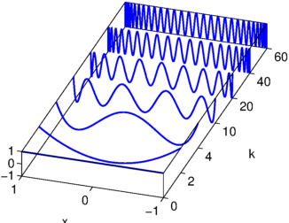

On p. 259 of their MATLAB Guide, 2nd ed. [1], Higham and Higham present an attractive 3D plot of several Chebyshev polynomials. Here is their plot reproduced in Chebfun.
k = [0 2 4 10 20 40 60];
x = chebfun('x'); one = 1 + 0*x;
FS = 'fontsize'; fs = 14;
for j = 1:length(k)
plot3(j*one,x,chebpoly(k(j)),'linewidth',1.6), hold on
end
axis([1 length(k) -1 1 -1 1])
box on
set(gca,'dataaspectratio',[1 0.75 4]), view(-72,28)
set(gca,'xticklabel',k)
xlabel('k',FS,fs), ylabel('x',FS,fs), set(gca,FS,fs)
h = get(gca,'xlabel'); set(h,'position',get(h,'position')+[1.5 0.1 0])
h = get(gca,'ylabel'); set(h,'position',get(h,'position')+[0 0.25 0])

References
- D. J. Higham and N. J. Higham, Matlab Guide, 2nd ed., SIAM, 2005.